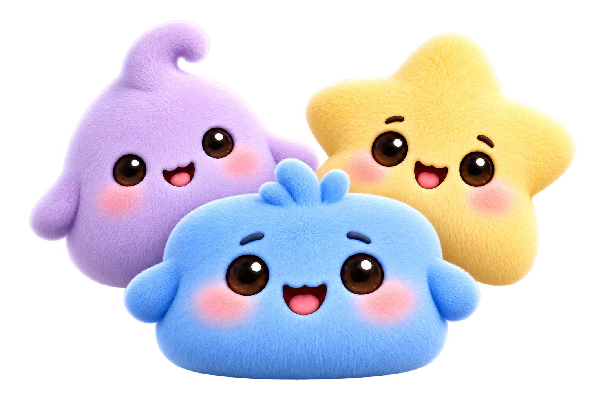

Small friend.
Big feelings.
Hatch a squishy companion. Share how you feel. Keep your people a little closer.
Meet Dotlings
A little someone for every kind of day.
Meet 29 companions, choose one for your profile, and share one of six moods with the friends you invite. A warm egg is your first little beginning. Daily check-ins bring more discoveries.
Made for iPhone, with circular, rectangular and inline Lock Screen widgets.